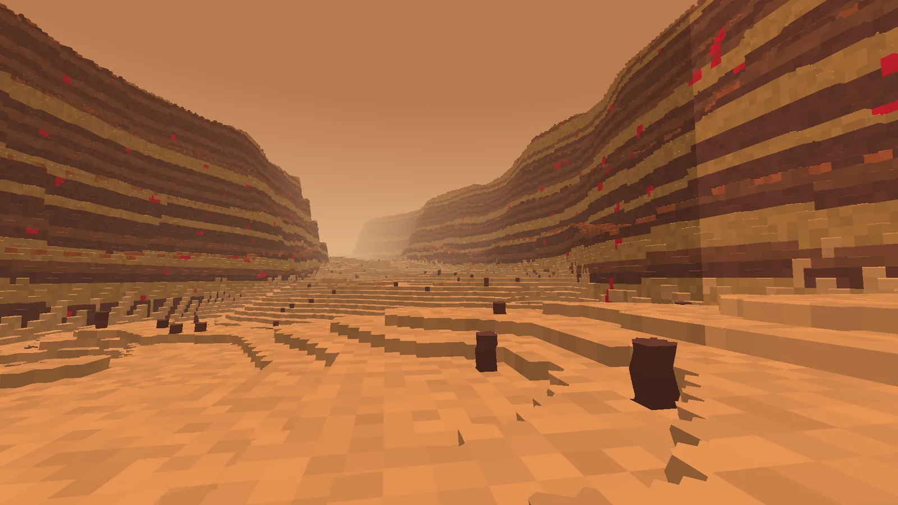
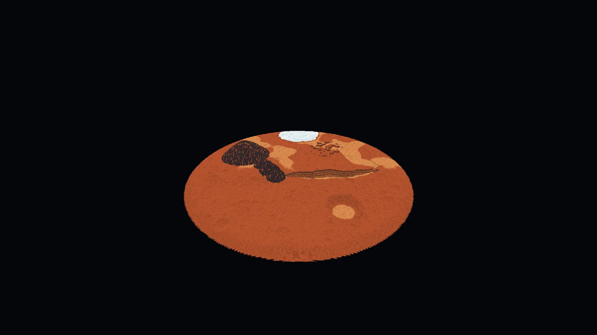
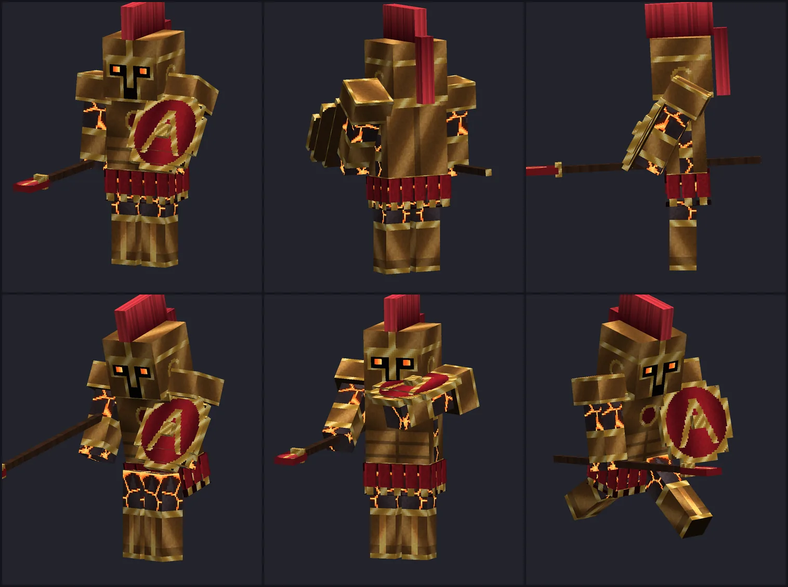
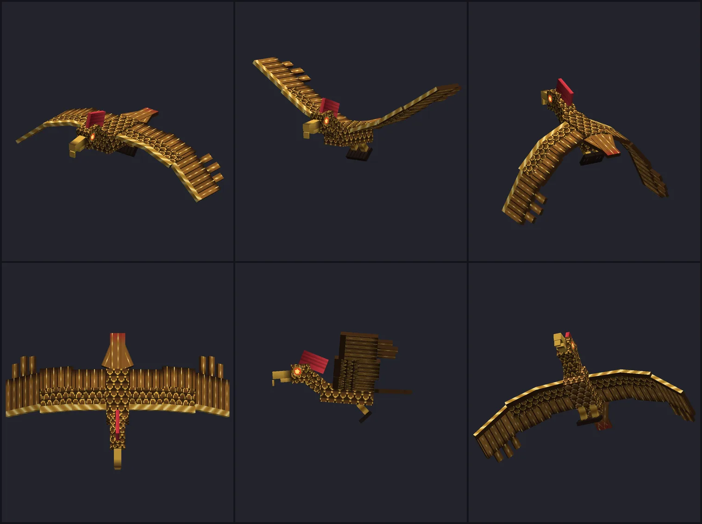

Planète
Mars, la planète d'Arès
La première planète des dieux. La touche divine de Mars n'est plus un acte de combat : elle ouvre la Voie de Mars, vers un monde rouge de 2000 blocs de diamètre, avec ses canyons, ses volcans, sa calotte de glace et son métal, l'arésite. Un dieu qui n'a pas encore sa planète garde son acte.








Le voyage
- Une fois par jour de jeu, comme tout acte divin : touche divine (N), l'invocation de 2,5 s, puis vous êtes au Sanctuaire d'Arès.
- Cinq minutes au plus. Le compte à rebours est en haut à gauche de l'écran ; il prévient à une minute et à dix secondes. À zéro, la voie vous ramène exactement là où vous étiez.
- Rentrer plus tôt : touche divine de nouveau.
- Les invités : à l'ouverture, tous les autres joueurs reçoivent un message avec [Rejoindre]. Qui clique arrive à vos côtés, où qu'il soit. Un invité repart quand vous repartez, ou avant avec [Repartir] (ou la touche divine). Personne n'est déplacé sans l'avoir demandé.
- Aucune autre entrée. Sans voyage en cours, la planète vous renvoie dans l'Overworld. Tomber dans le vide vous ramène au sanctuaire ; mourir vous fait réapparaître chez vous, voyage terminé. On n'y dort pas.
- Le Rafale y est autorisé : emportez-le replié et posez-le sur place.
La planète
Elle pèse 38 % du poids terrestre : un saut franchit trois blocs, et une chute fait bien moins mal. Elle est la même dans tous les mondes : ses reliefs ont une place fixe.
| Lieu | Où (x, z) | Ce qu'on y trouve |
|---|---|---|
| Sanctuaire d'Arès | 170, 16 | L'arrivée : huit piliers et leurs brasiers, sur un tertre au bord du canyon |
| Valles Marineris | -150 à 700, vers 100 | Le grand canyon : 850 blocs de long, jusqu'à 70 de profondeur, des parois en gradins où la croûte se lit strate par strate — et l'arésite à nu |
| Noctis Labyrinthus | -215, 150 | Un dédale de petits canyons à l'ouest du grand |
| Olympus Mons | -540, -270 | Un volcan-bouclier de 470 blocs de large, ceint d'une falaise, sommet vers Y 245 ; un lac de lave au fond de sa caldeira |
| Monts de Tharsis | -330, -30 à -196, 158 | Trois volcans alignés |
| Cydonia | 300, -430 | Des mesas à sommet plat et parois à pic |
| Bassin d'Hellas | 330, 560 | Le plus grand cratère : 300 blocs de large, un fond de dunes |
| Calotte polaire | 0, -840 | Un plateau de glace carbonique entaillé de sillons en spirale |
| Le nord / le sud | — | Au nord, des plaines basses et des champs de dunes ; au sud, des hautes terres criblées de cratères |
Les créatures
Deux créatures du mythe d'Arès, et elles seules, vivent sur Mars. Elles ne naissent pas de l'obscurité : la planète les fait venir autour de chaque visiteur — jamais plus de huit Spartes et six oiseaux à la fois, aucun en Paisible, aucun à moins de 28 blocs du Sanctuaire.
| Créature | Vie | Dégâts | Ce qu'elle fait | Butin |
|---|---|---|---|---|
| Sparte | 36 | 8 | Un guerrier de pierre et de bronze né des dents du dragon. Il sort du sol à 14–30 blocs de vous (1,7 s pendant lesquelles rien ne le blesse et il ne blesse rien), puis marche sur vous derrière son bouclier et frappe d'estoc. Armure 10 ; son bouclier détourne 70 % des projectiles qui viennent de face — tirez-lui dans le dos. | 1 à 3 arésites brutes |
| Oiseau du Stymphale | 30 | 8 (serres) 2,5 × 3 (plumes) | Un rapace aux plumes d'airain. Il tourne haut au-dessus de vous puis fond en piqué, comme un phantom, mais de jour ; et toutes les 3,5 s, s'il vous voit entre 6 et 30 blocs, il lâche une volée de trois plumes. Une paroi de canyon entre lui et vous suffit à s'en protéger. | 0 à 2 arésites brutes |
Le Butin augmente ces quantités. Tuées par un joueur, elles ont aussi 5 % de chances de laisser une Cuirasse ou des Cnémides d'Arès : c'est la seule façon de les avoir. Leurs œufs d'apparition sont dans l'onglet créatif.
Les blocs
| Bloc | Où | Outil |
|---|---|---|
| Régolithe martien, Poussière de Mars | Le sol ; les dunes | Pelle |
| Roche martienne, Strate ocre, Strate d'ombre | La croûte, en bandes : toute falaise les montre | Pioche |
| Basalte d'Olympus, Basalte incandescent | Les volcans et les profondeurs ; l'incandescent éclaire les caldeiras et ne brûle pas | Pioche |
| Glace carbonique | La calotte ; aussi glissante que la glace bleue, ne fond pas | Pioche |
| Minerai d'arésite | Partout dans la croûte : 1,4 % de la roche, environ 160 blocs par chunk | Pioche en fer |
| Roche polie, briques, escalier, dalle, muret, roche sculptée, pilier | Artisanat (ou tailleur de pierre) | Pioche |
| Bloc d'arésite | 9 lingots ; base de balise | Pioche en fer |
| Brasier de guerre | Artisanat ; lumière maximale, un feu qui ne brûle rien | Pioche |
L'arésite brute se cuit en lingot (four ou haut fourneau) ; la Fortune en donne davantage, le Toucher de soie garde le minerai. La planète ne donne aucune ressource de l'Overworld.
La Panoplie d'Arès
Bronze noir, émail cramoisi, or sur chaque arête. Le casque est corinthien, surmonté d'un cimier de crin rouge dont la queue tombe dans le dos ; la cuirasse porte trois lames sur chaque épaule, un médaillon, et une cape frappée du signe de Mars, bordée d'une grecque, qui flotte quand vous courez.
| Pièce | Armure | Durabilité | Recette (lingots d'arésite) |
|---|---|---|---|
| Casque d'Arès | 3 | 440 | Artisanat : 5 lingots d'arésite, en casque |
| Cuirasse d'Arès | 8 | 640 | Butin des créatures de Mars : aucune recette |
| Jambières d'Arès | 6 | 600 | Artisanat : 7 lingots d'arésite, en jambières |
| Cnémides d'Arès | 3 | 520 | 4, en bottes |
Chaque pièce : robustesse 3,5, résistance au recul 15 %, insensible au feu, enchantable, réparable au lingot. Les quatre portées ensemble : +2 de dégâts et +2 cœurs.
La cuirasse et les cnémides ne se fabriquent pas : un Sparte ou un Oiseau du Stymphale tué par un joueur a 5 % de chances de laisser l'une des deux, au hasard. Le casque, les jambières et la lance se fabriquent.
La Lance d'Arès, le Cor de guerre
d'arésite
d'arésite
de Blaze
d'arésite
de Blaze
Lance d'Arès
12 dégâts, 1,1 coup par seconde, portée +1,5 bloc, 2400 de durabilité. Clic droit : charge — vous êtes projeté en avant, et tout ce qui est hostile sur 7 blocs est transpercé (14 dégâts). 6 secondes de recharge. Ne touche ni les joueurs ni les animaux apprivoisés.
d'arésite
d'arésite
d'arésite
d'arésite
d'arésite
Cor de guerre
Clic droit : Force et Rapidité pendant 30 secondes pour tous les joueurs à 16 blocs, vous compris. 2 minutes de recharge. Ne s'use pas.
d'arésite
d'arésite
d'arésite
incandescent
d'arésite
polie
Brasier de guerre
Une vasque d'arésite sur son pied. Lumière 15.